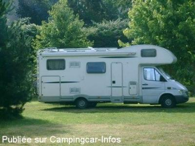
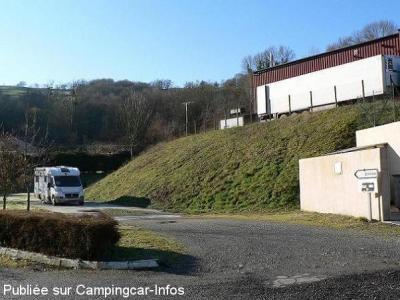
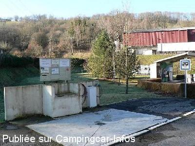

ASN = Aire de services avec stationnement nuit possible de :
COUPIAC
(N° 123)
Accès/adresse :
12550 COUPIAC
Latitude : (Nord) 43.95209° Décimaux ou 43° 57′ 7′′
Longitude : (Est) 2.58495° Décimaux ou 2° 35′ 5′′
Tarif : Gratuit
Services :


Proche de tous commerces
Autres informations :
15 emplacements sur herbe
Stationnement limité 72 h
Tél Office du Tourisme : +33(0)565 697 882
http://www.tourisme.fr/office-de-tourisme/coupiac.htm

Le 04/01/2011 par Correcaminos

Le 09/03/2010 par jean-phy

Le 09/03/2010 par jean-phy
de
jean
le 10/10/2011 :
WE du 8 et 9 octobre 2011, une aire bien pensée, gratuite et sur une pelouse bien entretenue. Calme, la station essence ne gene absoluement pas (c'est un petit village)les gens sont adorable. A conseiller.
WE du 8 et 9 octobre 2011, une aire bien pensée, gratuite et sur une pelouse bien entretenue. Calme, la station essence ne gene absoluement pas (c'est un petit village)les gens sont adorable. A conseiller.
de
Sombreffe
le 31/08/2011 :
de passage le 15 août 2011, je confirme les propos de toutencamion (génial le pseudo, au passage).
Les vidanges et plein d´eau sont vraiment très pratiques et bien pensés en plus d´être gratuits, l´employé municipal en charge est a-do-ra-ble, mille mercis vraiment à la municipalité, nous y repasserons, ce fut un de nos arrêts préférés.
de passage le 15 août 2011, je confirme les propos de toutencamion (génial le pseudo, au passage).
Les vidanges et plein d´eau sont vraiment très pratiques et bien pensés en plus d´être gratuits, l´employé municipal en charge est a-do-ra-ble, mille mercis vraiment à la municipalité, nous y repasserons, ce fut un de nos arrêts préférés.
de
Toutencamion
le 03/01/2011 :
Une aire de services gratuite est à disposition des CCristes, elle se situe à la sortie du village derrière une station essence automatique.
Eau potable et vidange de toutes eaux !
Installé entre les arbres et sur une herbe fraichement entretenue, nous y avons passé une nuit bien tranquille.Un grand merci à la commune.
Une aire de services gratuite est à disposition des CCristes, elle se situe à la sortie du village derrière une station essence automatique.
Eau potable et vidange de toutes eaux !
Installé entre les arbres et sur une herbe fraichement entretenue, nous y avons passé une nuit bien tranquille.Un grand merci à la commune.
de
jean-phy
le 09/03/2010 :
J'ai appris par la suite qu'il était possible de stationner près de la plage. Quoi qu'il en soit, nous avons passé une nuit tranquille, malgré le ronronnement des machines de l'abattoir juste à côté. Nous étions seuls ce soir là, fort heureusement, car le sol herbeux paraît douteux. Magnifique, mais attention à la route sinueuse et étroite pour arriver au village.
J'ai appris par la suite qu'il était possible de stationner près de la plage. Quoi qu'il en soit, nous avons passé une nuit tranquille, malgré le ronronnement des machines de l'abattoir juste à côté. Nous étions seuls ce soir là, fort heureusement, car le sol herbeux paraît douteux. Magnifique, mais attention à la route sinueuse et étroite pour arriver au village.
de
JOJOELYOT
le 25/09/2006 :
Aire située derrière station-service 24H sur 24H et à coté d'une usine, vidanges et eau gratuites. Camping du plan d'eau à proximité, 10€ la nuit avec calme et baignade.
Aire située derrière station-service 24H sur 24H et à coté d'une usine, vidanges et eau gratuites. Camping du plan d'eau à proximité, 10€ la nuit avec calme et baignade.